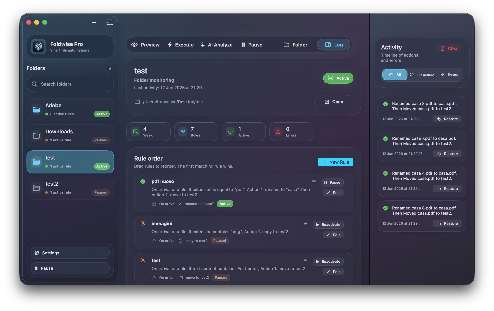

Senza Foldwise
- Download accumulati per giorni.
- File rinominati a mano, quando ti ricordi.
- Nessuna traccia chiara di cosa e' cambiato.
Il sistema elegante per macOS che riordina Desktop, Download e cartelle di lavoro mentre tu pensi ad altro.

Ogni download, screenshot, PDF o allegato crea una piccola decisione. Foldwise trasforma quelle decisioni in un sistema ordinato, verificabile e sempre sotto controllo.
Foldwise copre il ciclo completo: monitoraggio, regole, anteprima, azioni, storico e recupero. Disponibile in italiano, inglese e francese.
Combina condizioni, priorita' e azioni per descrivere come vuoi che il Mac organizzi i file. Foldwise lavora in background, ma ogni passaggio resta leggibile.
Le cartelle scelte vengono osservate continuamente. Puoi mettere in pausa una cartella, tutto il sistema o eseguire le regole manualmente.
Combina tipo, estensione, nome, testo leggibile, dimensione, eta' e data di creazione con logica tutte o qualsiasi.
Sposta, copia, rinomina, cestina, applica tag Finder oppure esegui Shell e AppleScript per flussi su misura.
Downloads, Desktop, progetti, fatture o archivi ricorrenti.
Usa condizioni leggibili e priorita' per descrivere il tuo modo di lavorare.
Le azioni vengono eseguite con log chiari, gestione conflitti e undo.
I tuoi file restano sul Mac. Le regole sono salvate localmente, l'accesso alle cartelle segue i permessi di macOS e l'analisi intelligente e' pensata per suggerire automazioni senza caricare documenti online.
Foldwise organizza file e cartelle localmente; internet serve solo per licenza e aggiornamenti.
Le cartelle vengono gestite tramite i permessi del sistema, non con accesso nascosto.
Anteprima, cronologia e undo rendono le azioni delicate più facili da verificare.
Backup e ripristino permettono di salvare o spostare la configurazione su un altro Mac.
Una gallery essenziale e reale: dashboard completa, cartelle, regole e cronologia. Premi una schermata per aprirla a piena dimensione.
Parti subito con la versione gratuita, poi acquista la licenza quando vuoi automatizzare tutto il tuo flusso di lavoro.
Gratis
€24,00
€29,00Licenza una tantum
La chiave arriva dopo il checkout.
Foldwise Pro si sblocca in pochi secondi.
Cartelle, regole e azioni avanzate senza limiti.
Le risposte essenziali prima di scaricare Foldwise o sbloccare la licenza Pro.
Si. Foldwise Free ti permette di provare il workflow reale con 1 cartella monitorata, fino a 3 regole e le azioni essenziali.
Pro rimuove i limiti su cartelle e regole, abilita azioni avanzate come copia, rinomina, tag e script, include AI locale privata e log completo.
No. Foldwise Pro e' una licenza una tantum. Paghi una volta e sblocchi le funzioni Pro sui Mac supportati dalla licenza.
La licenza Pro puo' essere usata fino a 2 Mac, ideale per computer principale e portatile.
No. Foldwise e' progettata per lavorare localmente sul Mac. Internet puo' essere usato per licenza e aggiornamenti.
Ricevi la licenza, la inserisci nell'app e Foldwise Pro viene sbloccato in pochi secondi.
Scrivimi dal canale più comodo. Per bug tecnici GitHub è ideale; per domande su licenza, installazione o Pro, meglio email.